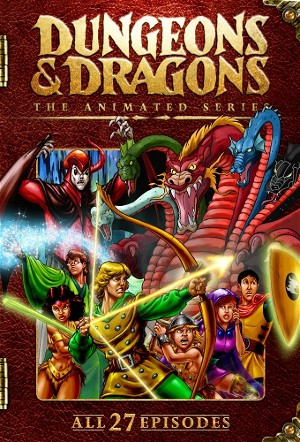

Dungeons & Dragons (1983)
ActionAdventureAnimationChildrenComedyFantasy
| Year | 1983 |
|---|---|
| Rating | TV-Y7 |
| Status | Completed |
| Seasons | 4 |
| Episodes | 33 |
| Genre | Action, Adventure, Animation, Children, Comedy, Fantasy |
A group of kids are thrown into a fantasy world where they must search for a way home, armed with magic weapons that an evil tyrant wants.
Episodes
Specials
| # | Title | Air Date | Synopsis |
|---|---|---|---|
| 1 | Requiem: Radio Show | — | The script for the final, never animated episode. The children finally have a chance to return home - but is it worth the risk? |
| 2 | Entering the Realm of Dungeons & Dragons | — | Documentary about the making of the series. |
| 5 | Interview with Michael Reaves | — | |
| 6 | Interviews | — | |
| 9 | Requiem | 2020-09-28 | The Final episode of the 1980s Saturday morning cartoon Dungeons and Dragons. From a script written by series writer Michael Reaves. Fully animated by using original footage from the series. Dialog from the DVD radio |
| 10 | Opening (Fr) | — |
Season 1
Six kids are pulled through a roller coaster into a magical realm and armed with mystical items by the enigmatic Dungeon Master—including Hank’s energy bow, Diana’s size-shifting staff, and Presto’s unreliable magic hat. As they fight to find their way home, they face Venger’s dark plots, unicorn rescues, enchanted skeletons, and the terrifying Tiamat. Throughout the journey, bonds form and hope stays alive.
| # | Title | Air Date | Synopsis |
|---|---|---|---|
| 1 | The Night of No Tomorrow | 1983-09-17 | Dungeon Master sends the children northward to the town of Helix to attend a local dragon-banishment celebration. On the way they meet Merlin in his magnificent sky castle. The wizard offers to make Presto his apprentice |
| 2 | The Eye of the Beholder | 1983-09-24 | The children come across a knight named Sir John, who helps save them when they are being chased by a giant scorpion. When Dungeon Master sends them to battle a beholder in a distant valley, the children decide the knig |
| 3 | The Hall of Bones | 1983-10-01 | The magical weapons the children use run out of power on them. Dungeon Master tells them they can recharge the weapons at the Hall of Bones. Venger learns of the children's difficulties and decides to intervene to see |
| 4 | Valley of the Unicorns | 1983-10-08 | The kids come to the aid of a unicorn named Silvermane, the leader of the last unicorn herd, who under attack by wolves. But when their attention is diverted, an old wizard named Kelek kidnaps Uni. The kids seek out th |
| 5 | In Search of the Dungeon Master | 1983-10-15 | While taking a lesuirely ride through the forest, Dungeon Master is attacked by a Warduke, a bounty hunter who possesses a sword that covers that which it is struck against with ice. He strikes the side of the tree Dung |
| 6 | Beauty and the Bogbeast | 1983-10-22 | The kids must seek out the river that rains upside down. Once a year the river reverses it's course and rains upwards for 60 seconds. And those who are in it can go whereever they desire. Dungeon Master warns the kids |
| 7 | Prison Without Walls | 1983-10-29 | The kids are sent to a valley where a village of gnomes reside. However, the gnomes are enslaved by Venger to mine the mystic gems out of the walls of the valley. When the kids attempt to free the people, they are info |
| 8 | Servant of Evil | 1983-11-05 | It's Bobby's birthday, but Venger's lizardmen crash his party and kidnap his companions. Now, aided only by Uni and Dungeon Master's magical amulet, Bobby must befriend the reluctant giant Karox and free his friends fro |
| 9 | Quest of the Skeleton Warrior | 1983-11-12 | Venger's enslaved skeleton warrior, Dekion, reports that he has found the Circle of Power, but it is held in the Lost Tower of the Celestial Knights. Only those with the pure of heart and could be a celestial knight the |
| 10 | The Garden of Zinn | 1983-11-19 | The kids are starving, and unable to catch any food. Even fishing results in catching a hydra, prompting the kids to defend themselves. But Bobby is poisoned by it's bite and the kids seek Dungeon Master's aid. Alas, |
| 11 | The Box | 1983-11-26 | A sudden earthquake splits the ground the kids walk on and Hank falls in. When the kids come to his aid, they find a box. The Dungeon Master informs them that it is Zandora's Box, a magical device that contains good or |
| 12 | The Lost Children | 1983-12-03 | While searching for a mysterious ship that will take them home, the kids team up with another gang of lost children to save their elder, Alfour, held prisoner in Venger's castle along with the ship. |
| 13 | P-R-E-S-T-O Spells Disaster | 1983-12-10 | Presto bungles yet another spell, and he and Uni must face enormous danger to rescue both their friends and the last of the Golden Dragons from the infamous Brooklyn Giant and his slimey pet Willy. |
Season 2
As the kids edge closer to home, powers intensify—and so do the personal trials. Hank wrestles with betrayal, Presto confronts a future-seeing girl, and the gang protects Dungeon Master’s garb when Venger strikes. In the haunting “Dragon’s Graveyard,” the true origins of Venger and his connection to Dungeon Master come shocking to light.
| # | Title | Air Date | Synopsis |
|---|---|---|---|
| 1 | The Girl Who Dreamed Tomorrow | 1984-09-08 | The children meet a girl who has been swept into the Realm, as they have, on a rollercoaster car. The girl, Terri, has the ability to dream the future. Together they set out to find the portal home that is hidden at th |
| 2 | The Treasure of Tardos | 1984-09-15 | Dungeon Master sends the Young Ones to the walled city of Tardos Keep to save Queen Solinara and her people from Venger's besigement. But the evil wizard has a wicked surprise for the kids--Demodragon, a two-headed fire |
| 3 | City at the Edge of Midnight | 1984-09-22 | Back in the real world, a boy named Jimmy is pulled under his bed and vanishes. In the world of Dungeons and Dragons, the kids are lost. The Dungeon Master tells them they have to find the City at the Edge of Midnight, |
| 4 | The Traitor | 1984-09-29 | While resting in the Moon Forest, they're awakened during a sneak attack by Venger's Orc Army. Bobby and Hank are captured and Shiela tells everyone that she's going to follow the Orcs to see where they take them. The |
| 5 | Day of the Dungeon Master | 1984-10-06 | After an attack by a swarm of wasps, the Dungeon Master greets the kids. Eric expresses that Dungeon Master's presence is always convient for him and his power is going to waste. The Dungeon Master then explains that h |
| 6 | The Last Illusion | 1984-10-13 | The children come to a cursed village in the middle of the Swamp of Darkness. Venger is using a wild talent illusionist called Varla to keep the village in a permanent state of decay. The children meet Varla's parents |
| 7 | The Dragon's Graveyard | 1984-10-20 | After another attempt at getting home is foiled by Venger, the frustration is too much for the kids. They decide to take the fight to Venger and finish things once and for all. Their idea: Tiamat - Venger's mortal enem |
| 8 | Child of the Stargazer | 1984-10-27 | The kids stumble upon a young man, sick from exhaustion and hunger. His name is Kosar and he has escaped imprisonment by a demon called Queen Seris. She wanted Kosar out of the way so she can remain in rule, fearing the |
Season 3
Their final quests push them through time and myth—battling the ancient Nameless One, disrupting Venger’s time-warp weapon, and seeking the powerful Stone of Astra. Along the way, they cross paths with Venger’s sister Kareena and an imprisoned fairy dragon. An emotional cliffhanger looms, with redemption, escape… and an unmade finale left to legend.
| # | Title | Air Date | Synopsis |
|---|---|---|---|
| 1 | The Dungeon at the Heart of Dawn | 1985-09-14 | Eric and Bobby retrieve a box for Dungeon Master. Despite the fact that they were under strict orders not to open it, Eric gets curious. Just as he pulls the pin from the lock, Dungeon Master appears and warns Eric to |
| 2 | The Time Lost | 1985-09-21 | Venger's got a new idea for eliminating his annoying young enemies, and pulls both a futuristic plane and a WWII Nazi fighter pilot into the Realm using his Crystal of Chronos. Venger intends to send Josef Mueller, the p |
| 3 | Odyssey of the Twelfth Talisman | 1985-09-28 | A lonely but smart orphan, Lorne, finds a lost amulet that leads him into big trouble. He and Eric become fast friends through the usual exchange of insults and bad-mouthing, and the gang teams up with him on their sear |
| 4 | Citadel of Shadow | 1985-10-12 | After getting yelled at by Eric for botching up a thieving job, Sheila is anxious to prove her worth by befriending Karena, a young woman who is more than she appears to be. Soon the gang finds themselves caught in the m |
| 5 | Cave of the Fairie Dragons | 1985-11-09 | Tasmira, queen of the Faerie Dragons, is held prisoner by the greedy King Varen, an evil warlord who desires their treasure. Aided by the sassy little dragon Amber, the gang must free her and help her people find a new |
| 6 | The Winds of Darkness | 1985-12-07 | The Darkling, a skeletal creature of darkness, kidnaps Hank. The kids have to convince the kindly Martha to help rescue their leader, before the Darkling claims his final victim and his Winds of Darkness destroy all lig |